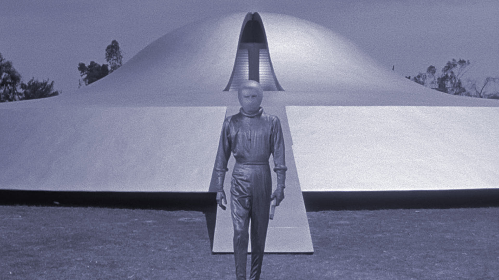
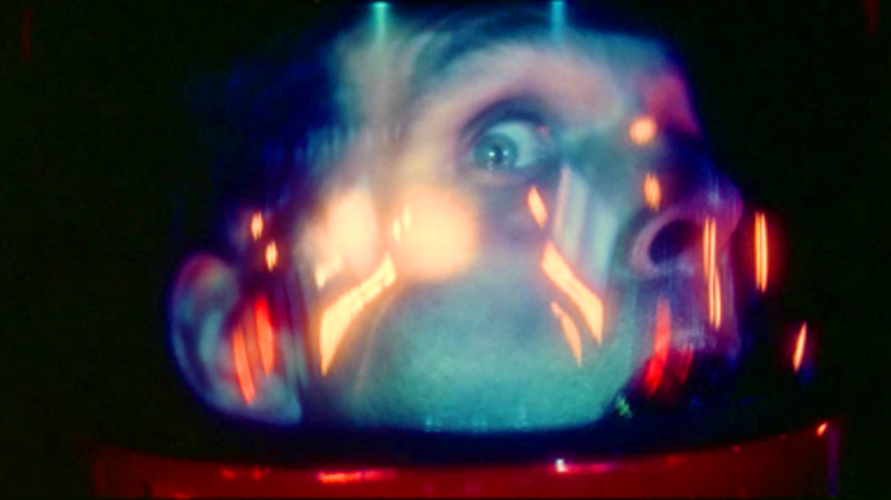
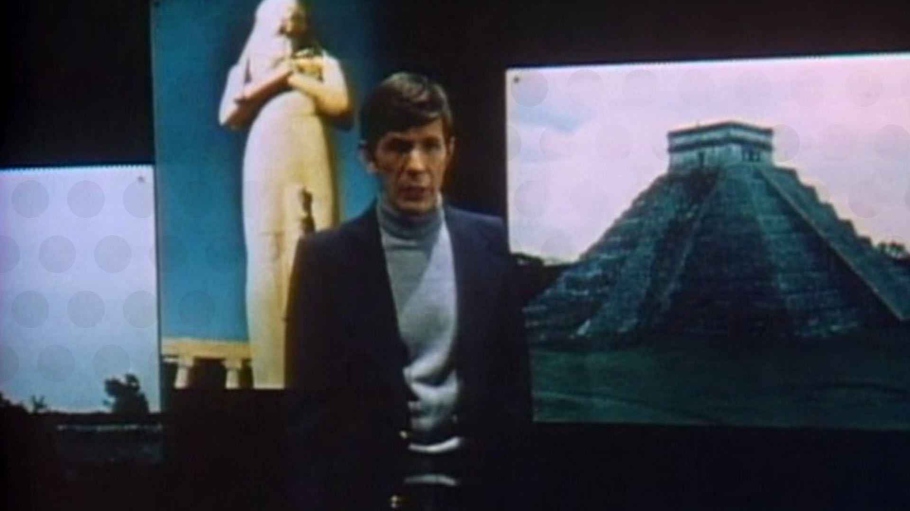
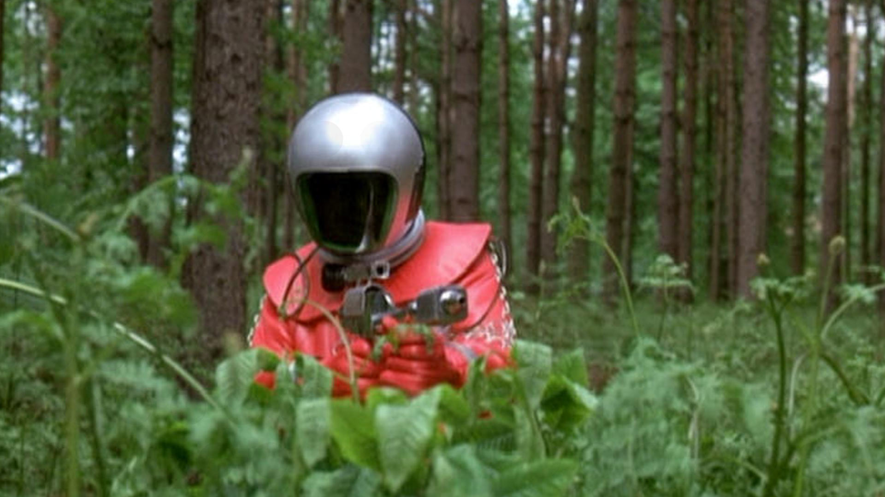
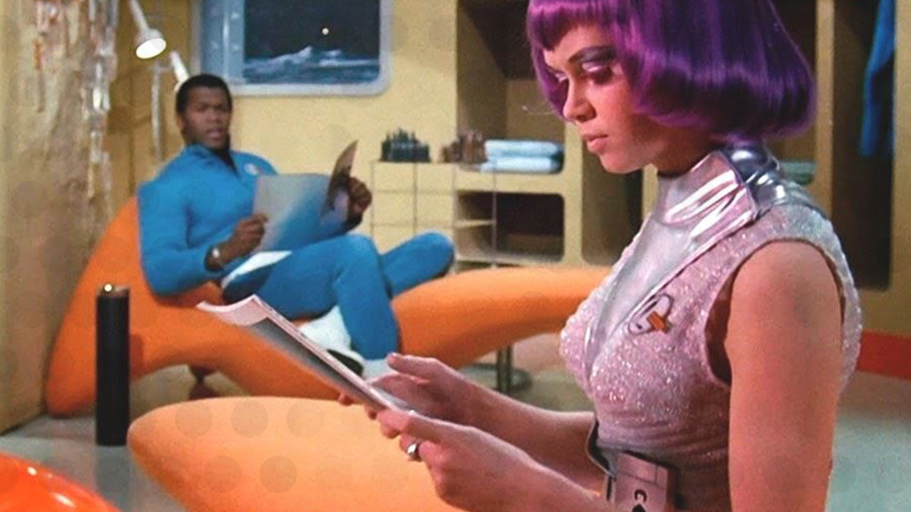
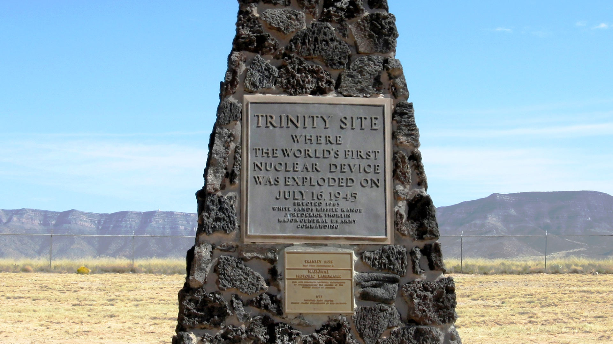

In search of... Apollo Eyes
Feature - Paul Fillingham, August 2021
Apollo Eyes is the title of a demo-track said to have been recorded by David Bowie at the White Sands Missile Range in New Mexico. The artist was inspired to write the piece whilst working on location as the lead actor in Nicolas Roeg's 1976 movie The Man Who Fell to Earth.
Like many creative ideas, Apollo Eyes was the product of a long gestation period. Bowie first referred to the song in 1974 around the time of his appearance on the Dick Cavett show for a live TV performance of Young Americans. RCA Records were looking for a space-themed follow-up to his 1969 hit A Space Oddity, but reluctant to become associated with NASA's waning space program - Apollo moon missions having ended in December 1972 - Bowie shelved the idea. During the filming of The Man Who Fell to Earth it was alleged, by Bowie himself, that he'd developed a serious cocaine habit and was barely functioning on set. This account was disputed by co-star Candy Clark who remarked that Bowie appeared clear as a bell and was working on alien-themed lyrics despite contractual disagreements with RCA. There are no Bowie recordings associated with the movie, though rumours of an acoustic demo circulated.
The movie wrapped at the end of 1976 and the artist subsequently moved to Berlin to concentrate on other creative endeavours and sort out his growing drug addiction. Despite earlier reservations, the artist revived the Apollo Eyes spaceman theme in the 1980 single release, Ashes to Ashes. Although UFO references from the original had been edited out and new romantic associations edited in, thus appealing to a younger demographic who were more focussed on London's burgeoning club scene rather than grappling with extra-terrestrials in Jesus sandals.
The American public lost interest in the Apollo missions rather quickly - it was expensive. There were wars to be won and military hawks could see no further value in openly demonstrating space-race superiority over the USSR. These were the cold facts driven by a cold war, but Apollo was anything but factual. We are not talking fake moon landings here - the Apollo landings were real enough, and lives were lost along the way - but there was a certain zeitgeist or invisible force which surrounded these missions.
Right from the outset, President Kennedy's dream of putting a man on the moon became a lens through which the next decade would be viewed. Astronaut Neil Armstrong was famously cool and the right man to land the Lunar Excursion Module safely on the surface of the moon. But all around him, the world was filled with crazy lunatics seemingly intoxicated by the romantic allure of other worldliness.

Throughout the 1950s there had been instances of cold war inspired UFO hysteria. Sightings of flying saucers, as they were called back then, were commonplace. The nascent US ARPA (Advanced Research Projects Agency) seeded eyewitness accounts of extra-terrestrial activity - gaslighting to distract the public from what was really happening in the skies with secret technology like stealth fighter jets. Then, in the early 1960s, the widely publicised alien abduction story from Betty and Barney Hill served to perpetuate the UFO mythology.
By contrast, NASA avoided all mention of UFO related matters, choosing to share intricate technical details of its missions and live TV feeds with news networks around the world. In the UK, these events were hosted by stalwart science correspondents like Patrick Moore, Peter Fairley and James Burke. School lessons were interrupted by group viewings in assembly halls up and down the country, so that we could bear witness to these historic feats. Each mission more adventurous than the last, building up to the inevitable landing - and the USA reclaiming their intercontinental ballistic bragging rights from the Soviet Union.

In 1968, film-maker Stanley Kubrick was engaged in a space race of his own, working at breakneck speed to bring his hyper-realistic 2001: A Space Odyssey to market just months before the actual moon landing would render his science fiction obsolete. Kubrick's commercial genius was to fill cinemas with an abstract LSD-inspired alien stargate sequence that defies logical explanation even today. The film industry is of course famously litigious. For the record, Lloyds of London refused to insure Kubrick against actual contact with extra-terrestrials before the film's release. Even the banks had Apollo Eyes on this one.
And this is where Erich Von Daniken comes in. An ex-con Davos hotel manager equipped with a giant Apollo-sized reading glass, Von Daniken built a successful career out of viewing religious myths and artifacts through the lens of space iconography, validating his hypothesis that God was an ancient astronaut with spurious theories and carefully curated photographic evidence.
Apollo Eyes served Von Daniken well. He saw ancient astronauts instead of the imagined deities of the faithful, he revealed the pyramids and other ancient structures as long-abandoned landing sites for alien spacecraft, he annotated hieroglyphs as if they were cut-away diagrams of space capsules. It was plausible, and we wanted to believe so badly that he sold over 70 million copies of his book Chariot of the Gods - infinitely more copies than the scholarly articles that subsequently debunked his work, often with far more interesting interpretation than the narrow Apollo Eyes perspective.

TV networks were quick to exploit the genre, enlisting the help of Twilight Zone film maker Rod Serling and the trustworthy tones of Leonard Nimoy, whose Star Trek Vulcan logic gave considerable credence to the ancient spaceman myth, most notably in the TV series In Search of... The ancient astronaut genre persists to this day and is standard fare on cable and satellite channels, broadcasting conspiracy theories on a pay-per-view and subscription basis around the clock.
Even as a boy, reading Von Daniken, I thought that crediting the achievements of ancient civilisations to alien technologists was incredibly disingenuous to our resourceful and intelligent ancestors. But like the rest of the Apollo-eyed masses, it was easy to get caught up in Von Daniken's UFO gulfstream, snapping up ufology paperbacks from the Old Pier Bookshop on Morecambe prom - along with Von Daniken's revelations, his impressionable mind would have me walking around holiday campsites, petrified by the prospect of these god-like travellers staking their claim on the heavenly bodies of our beloved solar system. Today Mars, tomorrow Skegness and Scarborough.
Worse still, each vacation would eventually come to an end, and the family would return to our humble terrace and the joys of negotiating an outside toilet. This meant running the gauntlet of alien abduction after nightfall. The toilet run became even more terrifying after TV puppeteer Gerry Anderson launched his first live action series, UFO.

Sir Lew Grade's under-rated TV acquisition was filmed in 1970 and set just ten years into the future. It featured forests, country roads, industrial back-lots and brutalist office blocks that were unnervingly familiar. Despite its obvious puppet-show lineage, the series explored adult and paranormal themes including personal relationships, extra-sensory perception, and the use of mind-bending drugs. These were the UFOs of the Midlands ATV-land. And the opening scene of Identified - the launch episode - really peeled our Apollo Eyes. Green-skinned, liquid-breathing humanoids wearing red spacesuits and armed with machine guns were shown hunting down reluctant organ donors in a pine forest. These determined figures were not run of the mill dog walkers, and something about the woodland setting made these aliens more believable than anything from the series' cinematic rivals. That said, when clambering over the fence to watch UFO on our neighbour's colour TV, I never once saw anything unbelievable or more remarkable than a meteor shower, the planet Venus, or next door's cat.

I could only assume that Anderson's fictional defence organisation SHADO (Supreme Headquarters Alien Defence Organisation) existed and were hard at work on the lunar surface, smoking cigarettes, drinking alcohol, wearing purple wigs and silver mini-skirts, and doing all the other things necessary to keep us safe, back on Earth.
In time, NASA's Space Shuttle, Skylab and robot landers began to demystify the heavens and Apollo Eyes vanished into the ether, much like David Bowie's legendary demo-tape. As a direct consequence, Von Daniken's publications began to find their way into curious repositories like the Old Pier Bookshop. And Bowie's shape-shifting persona told me not to worry about the Spiders from Mars anymore but Let's Dance instead.

The final twist in the tale is that while we're excited at the prospect of uncovering Bowie's missing demo-tape in New Mexico, we appear to have inadvertently strayed off-course into ground zero of the world's first atomic explosion. It's here, evidenced by excessive radioactivity, that we find the precursor to Hiroshima. And if we really want to avoid horrors like that in the future, then perhaps we should pay a little more attention to reality, and a little less to the fake reality of Apollo Eyes.